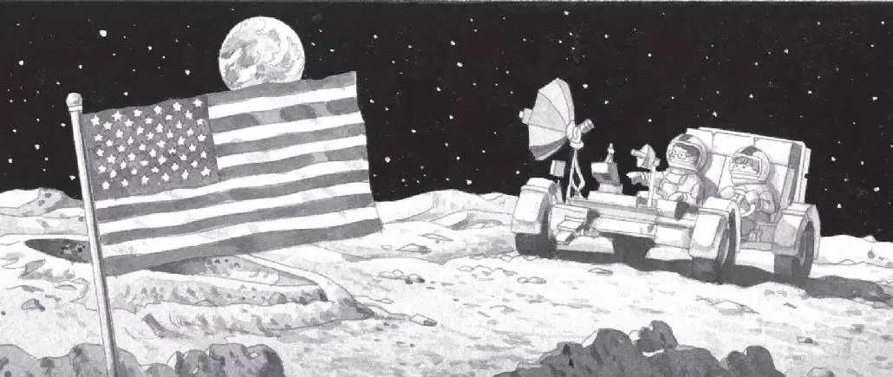
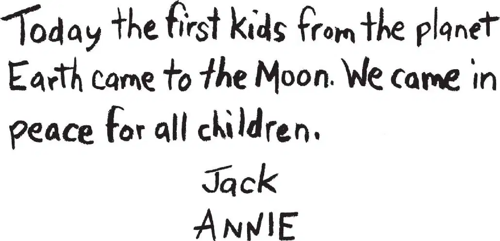
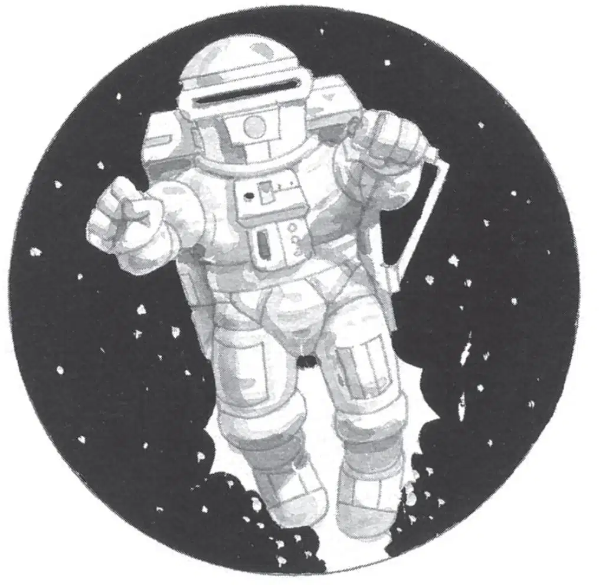

Annie drove the moon buggy over bumps and hollows. It bucked like a bronco.
“I’m going through there!” She pointed to an opening between two mountains.
Jack held on to the dashboard.
The buggy bumped toward the opening and shot through.
On the other side, the ground was even rockier.
“Look for the fo-fourth M thing!” said Annie, bouncing up and down.
Jack groaned. Looking for anything on this wild ride was impossible.
“Sl-slow d-down!” he said.
“How?”
“Try pressing on the b-brake pedal. On the f-floor—slowly!”
Annie pressed on the brake.
The buggy slowed down. Jack sighed with relief. The ride was still bumpy. But now, at least, he could take a good look at the moon.
He had never been to such a colorless, barren place. There was no green, no blue, no red.
No water, no trees, no clouds.
Only giant gray rocks and craters—and an American flag.

“Oh, man,” said Jack. “That’s from the first astronauts who landed on the moon!”
“And look—a telescope!” said Annie.
She drove near the flag and telescope. Then she put her foot on the brake until the buggy stopped.
She pressed a button that said OFF. Then she and Jack hopped out.
They took slow giant steps to the site of the first moon landing.
Beside the flag was a sign. Annie read it aloud:
HERE MEN FROM THE PLANET EARTH
FIRST SET FOOT UPON THE MOON,
JULY 1969 A.D.
WE CAME IN PEACE
FOR ALL MANKIND.
“That’s a good message,” said Jack.
He handed the moon book to Annie. Then he took out his notebook and pencil to copy the sign.
“Let’s leave our own message,” said Annie.
“What should we say?” said Jack.
“The same thing,” said Annie. “But say we are the first kids.”
Jack turned to a new page in his notebook. In big letters he wrote their message.
“Now we have to sign it,” Annie said.
Jack signed his name.
Then he passed the notebook and pencil to Annie. She signed her name and passed the notebook back.
Jack tore out the piece of paper. He put it by the flag.

No wind would ever blow the message away. No rain would ever fall on it.
It would be there forever, unless someone moved it.
Thinking of “forever” made Jack feel dizzy. He shook his head to clear his thoughts. Then he remembered the time. Had two hours passed yet?
“I wish I had a watch,” he said, standing up. “We might be running out of time.”
“Oh, wow. A moon man!” said Annie.
“What?” Jack turned to look at her.
She was staring through the telescope.
Jack walked over to the telescope. Annie stepped aside so he could look, too.
Jack gasped. In the distance, something was flying above the ground.
It looked like a giant man in a spacesuit.
